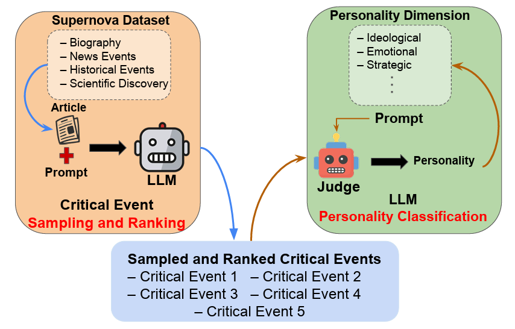
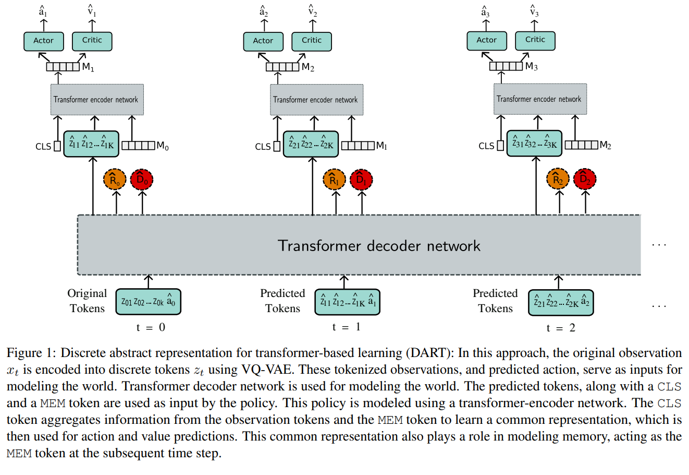

|
I completed my Ph.D. at Mila (advised by Sheldon Andrews and Samira Ebrahimi Kahou), with a focus on reinforcement learning for robotics and character animation. My research explored efficient reinforcement learning algorithms using improved prior modeling for robotic applications. Specifically, I have worked on:
Previously, I was a student researcher at Inria, collaborating with Natalia Díaz-Rodríguez and Raoul de Charette. I completed my Bachelor's in Electronics and Communication Engineering at IIIT Guwahati, where I was awarded the President's Gold Medal. During my undergraduate studies, I worked as a research intern at SUTD with Professor Gemma Roig. Research Interests: Reinforcement Learning | Lifelong Learning | World Models | Video Models | Robotics | LLM Interpretability Hobbies: Outside of research, I enjoy long walks, capturing nature (check out my photos), reading (see my book collection), and lifting weights. [ Email / CV / Github / Twitter / Google Scholar / Linkedin / Projects ] |
Experience & Education


{kind=link}
News
-
June 2025:Paper - Our paper Interpreting Large Language Model Personality was accepted at ICML 2025 workshop.
-
May 2025:Position - Started a research internship at Wayve, working on World Models and Offline-RL.
-
March 2025:Reviewer - Served as reviewer for SCI-FM @ ICLR 2025.
-
Feb 2025:Reviewer - Served as reviewer for ICLR 2025 Workshop DeLTa.
-
Feb 2025:Blog - New blog out: Mamba: Can We Achieve Infinite Context Length?
-
Jan 2025:Under Review - Continual Reinforcement Learning for Robotic Application.
-
July 2024:Award - ETS Substance Research Dissemination Scholarship worth 1000$.
-
June 2024:Reviewer - Served as reviewer for SIGGRAPH Asia.
-
May 2024:Paper - Our paper Learning to play Atari in a World of Tokens was accepted at ICML 2024.
-
Nov 2023:Reviewer - Served as reviewer for ICRA.
-
Oct 2023:Paper - Our work Empowering Clinicians with MeDT: A Framework for Sepsis Treatment was accepted at Goal-Conditioned Reinforcement Learning Workshop, NeurIPS 2023 (Spotlight).
-
Oct 2023:Reviewer - Served as reviewer for SII.
-
Sept 2023:Exam - Passed the Ph.D. proposal exam.
-
Jul 2023:Paper - Preprint release of our work Transformers in Reinforcement Learning: A Survey.
-
Apr 2023:
-
Dec 2022:Paper - Our work Automatic Evaluation of Excavator Operators using Learned Reward Functions was accepted at Reinforcement Learning for Real Life Workshop, Neurips 2022.
-
Nov 2022:Reviewer - Served as reviewer for Robotics and Automation Letters.
-
Sept 2022:Position - Fast-tracked to a PhD position at Mila.
-
Jun 2022:Award - Received an Exemption from International Tuition Fees for Graduate studies.
-
Jan 2022:
-
Mar 2020:Paper - Our work Egoshots was accepted at Machine Learning in Real Life Workshop, ICLR 2020.
-
May 2019:Position - Started a research position at Inria.
-
Apr 2019:Graduation - Graduated from IIIT Guwahati with President's Gold Medal.
-
Mar 2019:Paper - Our work Learning to synthesize faces using voice clips for Cross-Modal biometric matching was accepted at IEEE Region 10 Symposium (TENSYMP).
-
Mar 2019:Award - Received the Best Technology Award (reward of 1500 USD) by Govt. of India.
-
May 2018:Position - Started a Research Internship at Singapore University of Technology and Design.
Research
|  |
Pranav Agarwal, Ioana Ciucă, ICML 2025 Actionable Interpretability Workshop. Paper / Code / Webpage / Demo / Dataset In this work, we interpret the personality traits of Large Language Models (LLMs) using our proposed Supernova Event Dataset, which includes Wikipedia articles consisting of historical events, biographies, news events, and scientific discoveries. We benchmark models based on their identification and ranking of key life or discovery events, a complex task requiring causal reasoning. A second LLM acts as a judge to infer each model’s personality based on its event selection and interpretation. Our analysis show distinct traits, like emotional reasoning in Orca 2 and analytical framing in Qwen 2.5, enhancing interpretability and trust. |

|
Pranav Agarwal, Aamer Abdul Rahman, Pierre-Luc St-Charles, Simon J.D. Prince, Samira Ebrahimi Kahou Under Review (2023) Paper / Webpage This survey explores the impact of transformers in reinforcement learning, addressing common RL challenges, while examining their applications in representation learning, policy optimization, and interpretability. |
|  |
Pranav Agarwal, Sheldon Andrews, Samira Ebrahimi Kahou International Conference on Machine Learning (ICML), 2024. Paper / Code / Webpage / Slides This work introduces Discrete Abstract Representations for Transformer-based Learning (DART), a sample-efficient method that utilizes discrete representations to improve world modeling and learning behavior in reinforcement learning, achieving superior performance on the Atari 100k benchmark compared to existing methods. |
|
Aamer Abdul Rahman, Pranav Agarwal, Vincent Michalski, Rita Noumeir, Philippe Jouvet, Samira Ebrahimi Kahou NeurIPS 2023 Goal-Conditioned Reinforcement Learning Workshop (Spotlight). Paper / Code / Webpage / Slides The Medical Decision Transformer (MeDT) leverages the transformer architecture to enhance offline reinforcement learning for sepsis treatment recommendations, utilizing a goal-conditioned RL paradigm that improves interpretability and clinician interactivity, while achieving competitive results on the MIMIC-III dataset. |
|

|
Niloofar Gholipour, Marcos Dias de Assuncao, Pranav Agarwal, Julien Gascon-Samson, Rajkumar Buyya, IEEE 29th International Conference on Parallel and Distributed Systems (ICPADS). Paper / Code / Webpage / Slides This paper introduces TPTO, a Deep Reinforcement Learning approach that utilizes Transformer and Proximal Policy Optimization to efficiently offload dependent IoT tasks to edge servers, significantly reducing latency for IoT applications compared to state-of-the-art methods. |

|
Pranav Agarwal, Marek Teichmann, Sheldon Andrews, Samira Ebrahimi Kahou NeurIPS 2022 Reinforcement Learning for Real Life Workshop. Paper / Code / Video / Slides A novel automatic evaluation strategy for excavator operators is proposed, utilizing machine dynamics and safety criteria, which is then validated through reinforcement learning in a simulation, resulting in safer and more realistic excavator maneuvering policies. |

|
Pranav Agarwal, Pierre de Beaucorps, Raoul de Charette In submission (2021). Paper / Code / Video A curriculum-based deep reinforcement learning approach for end-to-end driving is proposed, using sparse rewards and navigation view maps to achieve generalization on unseen roads and longer distances. |

|
Pranav Agarwal, Alejandro Betancourt, Vana Panagiotou, Natalia Diaz-Rodriguez Machine Learning in Real Life (ML-IRL) ICLR 2020 Workshop. Paper / Code / Video / Slides A new image captioning dataset, Egoshots, is introduced alongside a novel evaluation metric, Semantic Fidelity, to address biases in existing models and enable caption assessment without annotations. |
|
Pranav Agarwal, Soumyajit Poddar, Anakhi Hazarika, Hafizur Rahaman 2019 IEEE Region 10 Symposium (TENSYMP). Paper / Code A framework for cross-modal biometric matching is proposed, generating faces from voice clips using various generative networks, with RC-GAN achieving the best identity accuracy of 84.52% and VAE producing the highest quality images. |